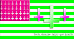
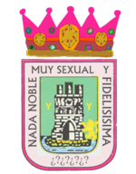
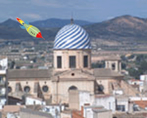

Yecla
 De: La Frikipedia, la enciclopedia extremadamente seria.
De: La Frikipedia, la enciclopedia extremadamente seria.
| De la serie ciudades del mundo:
|
| Yecla
|
| 
|

|
| (Bandera)
|
(Escudo de armas)
|
|
| Topónimo oficial
|
Yecl-ano
|
| País
|
España
|
| Código postal
|
Todos
|
| Superficie
|
Desdel castillo a Jumilla, Villena, Almansa y el gran Raspay (Habitado por guiris)
|
| Altitud
|
Cuesta abajo y cuesta arriba (segun se mire)
|
| Distancia
|
¿De donde?
|
| Fundación
|
Siglo XXII antes de Cyber-Jesus©
|
| Población
|
35.000 habitantes, destacamos: Curas, pederastas, fachas, tu madre y la mía y mucha gente (raros todos)
|
| Gentilicio
|
Yeclano, Yeclanense, Pervertidos...
|
| Alcalde
|
Benedito, pero no el Papa
|
| En contínuas e interminables luchas contra los Jumillanos, los Yeclanos viven bien, descansando, son muy guarros y les gusta tocarse la flor ...
|
«¡De cada 10 yeclanos 5 son la mitad!»
~ Un estadista yeclano mostrando sus conocimientos demográficos.
Yecla es un pueblo/ciudad/sexshop de la seca Región de Furcia. Está situada sobre el Altiplano (agarramela con la mano) que comparte porros territorio con la vecina ciudad/centro de atracciones homosexual de Jumilla.
Yeclanos y Jumillanos tienen una lucha legendaria. Debida a que nos robaron todo nuestro oro y se acostaron con todas nuestras primas peludas (Cualquier parecido con Los Simpsons es sólo imaginación tuya... Deja de leer éste articulo y mira si tu madre se está tocando). Según los últimos estudios las calles de Yecla tienen una propiedad netamente propia, aunque no se sabe suben o bajan lo que está claro es que desde ellas se puede viajar en el tiempo.
Historia
- En el monte Arabí (un monte de aquí) unos cafres en se dedicaron a marranear en las paredes de las cuevas que hay allí. Los "ilustres" cientificos del pueblo anunciaron que las pinturas eran prehistoricas, aunque todos sabemos que no es así.
- Yecla, del moro Yakka, o Jackass (como os guste más). Llamada así porqueee............. a los moritos les gustaba tirarse del cerro del castillo.
- Se cree, que en el siglo de Franco, éste, inauguró un Pantano, cuya agua fue robada por Camacho para hacer un campo de golf en Polaris World.
- En las primeras elecciones los Yeclanos no votaron, por que veían las urnas como cosa de brujas y por ello fueron quemadas todas las papeletas mientras gritaban viejas injurias yeclano-gitanas:
-Jusjos agao klaoas alkajs jaimecabron jasjiakiuuusiiii vomva gorrrrdo!!!!
- Actualmente Yecla evoluciona favorablemente a la velocidad de los Amis, (gracias al gobierno municipal del Partido Porno Popular), cuya decencia está aun por decidir.
 La iglesia durante el atentado, al cura de la ciudad le dio un ataque
Gastronomía, partys y cultura (basura)
Cultura basura
Yecla no posee en absoluto nada digno de mención con respecto a lo cultural... Bueno sí, está página de la frikipedia es lo único que cabe destacar.
Gastronomía
Aqui vivimos de berberechos y latas de fabada Asturiana © y sin hacerles feos a los precocinados. También cabe comentar los botes de conserva que se rebuscan detrás del Dia, cuya calidad es superior a la del supermercado.
Por ultimo y por lo cual no menos repugnante, nuestras Gachasmigas™ que aunque tienen pinta de cerebro de mono tienen un sabor "aceptable".
Partys
- Emero: El día 23 se celebra el día del año nuevo.
- Ferrero®: San Balentin: "Inbento" del "Corte Inglé".
- Marco: La fiesta de Marco y su mono Amelio en la que se busca el chychi perdido de tu madre.
- Havril: Continuamos buscando el chichy de tu madre ¿donde estará?
- Mallo: Fiesta en la que jovenes beben y destrozan sus higados año trás año. A mi me gusta el pinpirivinpinpi....
- Hunio: Dia de la región ¡Puente! "Murcia que ermosa heres®".
- Julyo: Es el santo de Julio Iglesias nuestro querido patrón
- Agusto: Nos tocamos los webos y estamos bien agusto en nuestra chabola.
- Septi...sept..emb..bre: La feria: gitanos que montan atracciones muy defectuosas en las que los niños gastan dinero y mueren.
- Otuvre: No martini, no party.
- Nobiemvre: Fiestas de las Virgenes: Las que las chicas que participan , al año siguiente no pueden repetir.
- Dyzienvrè: Celebración del nacimiento de un dios pagano, realmente no existe aunque Don Francisco y sus secuaces sexuales nos obliguan a creerlo.
Lugares de interes
- Locutorios: prohibida la entrada a cualquier persona que no provenga de Europa del este/África/Asia/América del Sur/Polo Norte/Marte/subsuelo.
- Bourdeles: aunque creemos que son iglesias.
- Sexhops: donde encontramos esas cabinas tan " limpias " que hay en su interior.
- Poblados gitanos: lugares donde encontrar jeringuillas usadas, ropa usada, cualquier objeto usado(incluyendo basura)y gitanos. Tambien llamados vertederos, chatarrerías y picaderos.
- Mercadona's: lugares donde encontrar productos Hacendado(que no fabrican dados, solo las fichas de la oca o del parchís).
- DIA's: como lo de antes, pero 541687613761768 veces peor y mas barato.
- Hospital (Jumilla no tiene y las mujeres dan a luz en medio del campo jajaja)
- Prostibulos: véase Casa de citas.
- Casas de citas: véase Prostíbulos.
- Iglesias: En las que todos los curas se dedican a tocar a las niñas y niños pequeños y ancianos.
- Sus numerosas playas, ríos y pistas de esquí.
- Alcantarillas: de donde sale humo, debido a que las ratas fuman y asan castañas.
Tribus Lleclanas
- Yeclanos normales: son personas corrientes (aun dudamos de ello) que llegan tarde a cualquier sitio, se pelean con todo lo que se mueve y piensan que su ciudad debería ser la capital de su Comunidad Autónoma. La mayoría no dan un palo al agua en clase, no han mojado todavía y se la machacan cada día mirando a mujeres octogenarias por el balcón.
- Yeclanos Punk: Sus aficiones son el botellón, el vandalismo, la procreación y la creencia en que el sistema "fascista" en el que habitan les reprime y por eso hay que emborracharse. Son especialistas en quemar contenedores y ancianas y gritar cosas como !Legalizacíon¡, ! Cannabis, legalidad y ganancia¡ y !Anoche me folle a tu madre facha¡
- Yeclanos Peperos: Son de derechas ®, adoran su dios particular(lo gracioso es que se creen que les protege y les cuida),la mayoría estan muy adinerados y se rien del proletariado, del que dicen que no trabajan y siempre acaban con la coletilla de pues haber estudiado, como si ellos supieran multiplicar, mariconas.
- Yeclanos Emo-Punk-Neo-Hard-Snob-Windows XP: enfermos mentales.
- Yeclanos Makina: O canis. Tipejos muy particulares, ya que visten calcaos, se mueven igual, tienen la misma ideología espiritual (me sorprendería si alguno supiese lo que es), realizan felaciones a los profes para aprobar, su corte de pelo a lo Forest Gun y como no lo que mas le caracteriza es su musica Neanderthal, anuladora de neuronas, excitante para caballos, incitante al suicidio y a pegarse con todo persona que no sea igual que ella. De ellos solo se puede resaltar una cosa mis excrementos pesan mas que su masa encefálica (para los que no sepan lo que es, es que pertenecen a este grupo)
- Yeclanos Emo: (no sé lo que son, pero me lo invento) segun ilustres abuelas, tienen el mismo cerebro que un topo con rabia, ya que les gusta cortarse las venas ( bueno y lo que no son las venas), creen que van a la moda con pantalones por las rodillas, visten de negro y....rosa?, también se les puede identificar debido a que solo se desplazan en monopatin, gastan 45618 Kg de gomina o espuma para el pelo, que se lo ponen tapandoles un ojo, el porqué, es un misterio. Realizan orgias de Sexo Sádico Salvaje muy a menudo en las que solo acuden yeclanos Emo, los colgaos del Mesenller y como no, Don Francisco siempre se apunta, solo si hay, como dice el: -Monaguillos sin sotana...
- Yeclanos Colgaos: pertenece a este grupo cualquier persona que fume la rica marihuana mágica de mamá , sin excepciones. Si quieres saber si alguna persona pertenece a esta tribu lee con desatención. Toda persona que haya probado cualquier tipo de drogas, incluso por error (cosa que dudo) es un auténtico colgao. También incluimos en este grupo a las personas que van a clase de escucha y cuando se decide el viaje de estudios propone Amsterdan porque le han dicho que tiene buenos monumentos (Cofee shop), y que se pueden visitar claro. Y por último también puedes entrar en este grupo Tú, ya que eres un auténtico colgao leyendo nuestros artículos en la Frikipedia.
- Viejunos y sucias: Son los Yeclanos que superan los 65 años, son gente que güele mal y que va a misa todos los días a todas horas, se dedican a meterse con todas las personas, a gritar, intentar dar miedo a la gente normal, por ejemplo diciendo:
-No piseis el cespede que hay camaras.
-Vaya por dios.
-Si franco levantara la cabeza.
-Que valbaridá!
-Antes con 2 pesetas cogía el tren, almorzaba e iba de putas, ahora solo tengo para un asilo.
-Y decían que iba a llover... el tiempo hace lo que quiere...(hablando solo)
Se les suele encontrar en los parques en las horas comprendidas entre las 4 y las 5:30. Forman grupos de 5 o 6 individuos, aunque también se les puede encontrar por separado.
Una de estas más peligrosas es la señora Delfa.Esta convecina yeclana se dedica a tirar bolsas de basura llenas por la terraza hasta la calle, camina desnuda, tambien se mea en los portales mientras grita: ¡Mañana recibiré mi pensión gratis!
Por favor si eres tu esa demente persona, ten piedad de mi, (pero a mis amigos te los puedes comer)
Politica Yeclana
Hemos relizado 213 encuestas a 214,1 Yeclanos sobre la política y estas han sido las únicas respuestas mas destacadas:
«¿Qué es eso de la politica, una nueva droga?»
~ Un yeclano hablando sobre la politica del pais.
«Caro que se qu'es eso de la potilica, un cobete verda (en castellano antiguo o de pueblo)»
~ Viejo yeclano que vive en una casa abandonada en mitad del campo
«Por supuesto que se quien es la politica esa.»
~ Respuesta de un gilipollas campesino de pueblo, al preguntarle sobre la politica internacional.
«La politica es el proceso y actividad orientada, ideológicamente, a la toma de decisiones de un grupo para la consecución de unos objetivos.»
~ Seguro que este no es de Yecla.
«Es que ahora no me acuerdo, preguntale a mi nene que seguro que lo sabe.»
~ Respuesta de la típica ama de casa que se pasa todo el día viendo pogramas del corazón y que tiene los mismos hijos que un conejo.
Cosas
Que no tiene Yecla
- Mujeres sin pelos en la entrepierna y sin bigote.
- Chicas guapas que no tengan novio nada mas nacer o vengan con él de serie.
- Servicio de recogida de basuras ( aunque no hace falta, porque la tiramos por el balcón)
- $$$$$$$$$$$$$$$$$$$$$$$$$$$$$$$$$$$$$$$$$$$$$$$$$$$$$$$$$$$$$$$$$$$$$$$$$$$$$$$$$$$$$
- Heterosexuales.
- Turismo que no provenga de guiris.
- Colegios en los que los niños no sean obligados a felaciones continuas.
- Sectas para hacer competencia a la iglesia.
- Un alcalde digno (distinto al de ahora, que miente hasta cuando dice la verdad)
- Flora y fauna no radiactiva.
- Lluvia que no sea de langostas.
- Meaderos en las calles (¿que pasa?, es un sueño que tengo).
- Chicas que no lleven puestas las alpargatas combinadas con las bragas de castidad.
- Un instituto en el que para subir a una planta, primero tengas que bajar (parece ser que lo construyeron mal).
Pedanías
Aunque esté en plural solo tiene una (en el planeta Tierra me refiero), se refieren a ella como Raspay , famosa básicamente por su gran compañía de vuelos baratos Raspayair. Debido a esto y a su playa se llena de guiris.
Autor(es):
- Krusher
- Frikiman
- Aque
- Azulejos
- El Sevillano
- Anvicer93
- Jaimelocoton
- Sergio89
- Juancarlos
- Juanka
Frikipedia 2005-2016, Licencia
GFDL 1.2 - Extraído por FrikiLeaks